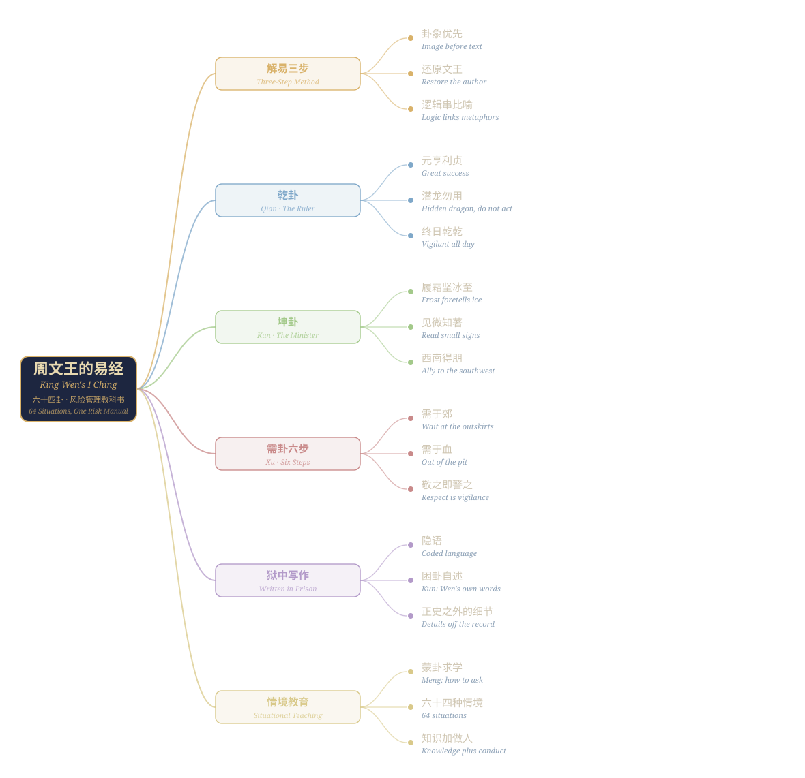

周文王的易经
〇 · 书籍信息
基本信息
| 书名 | 《周文王的易经：还原〈易经〉的本来面目》——把《易经》从「算卦之书」还原为它最初的样子：周文王姬昌在商朝监狱里写下的「知识普及读本」——一份写给周国王子王孙的人生经验总结 |
|---|---|
| 作者 | 由由：金融部门风险管理工作出身——用风险管理的眼光读《易经》，发现它「简直就是一部风险管理的教科书」：见微知著、履霜坚冰，格言警句遍布全书 |
| 结构 | 前言（方法论）+ 卦序歌 + 上经三十卦 + 下经三十四卦——每卦四段：卦象 / 卦辞 / 爻辞 / 讲解；六十四卦对应六十四种人生情境——乾为君、坤为臣、蒙求学、讼争端、师战争、家人齐家 |
| 方法 | 「卦象逻辑解易法」三步：一、先解卦象（以象喻意）；二、把作者还原为有血有肉的周文王（只重卦爻辞原作，慎引十翼）；三、用逻辑分析比喻链——六十二卦由此得到脉络清楚的解释，并发现《史记》里没有记载的商周斗争细节 |
| 一句话 | 《易经》只有六千余字，却是四书五经中最早的一部：乾卦「元亨利贞」四个字，也是它在中国文化里的地位——群经之首，不为过。 |
一 · 核心主题总览
六十四卦被读成四种母题：① 一部风险管理教科书
坤卦初六的名言「履霜坚冰至」被作者立为全书纲领：做业务、选拔干部，风险意识是基本条件；而风险从不明示自己——看到霜冻，就要想到严冬即将到来。乾卦的潜龙勿用同理：时机未到，把自己埋在地下——风险管理的第一课不是动作，是忍住不做。
② 卦象即情境
「《易经》的六十四卦，对应了人生中的六十四种情境，它告诉我们遇到这些问题，应该怎样想、怎样做」——需卦讲需求（农民进城的六步人生）、谦卦讲谦虚、坎卦讲风险、困卦是文王自述困境、旅卦是文王的苦旅回忆——每一卦都是一个工作场景的操作手册。
③ 隐语与商周斗争
文王在狱中秘密写作，很多话是隐语：「西南得朋，东北丧朋」不是玄学，是周国战略发展方向的指导——因为怕商朝监视者抓住把柄，不能挑明写。作者以卦象逻辑读出《史记》等正史无载的商周斗争细节：把《易经》当「经」读的，都把它读死了；把文王当活人读的，才读出密电码。
④ 教育的镜子
前言的一面镜子照向今天：现代教育重知识传授，轻人生观与方法论——「有几个学生能做到『初筮告，再三渎，渎则不告』这样的境界呢？」——蒙卦的求学之道：第一问必答，反复乱问就不再答，是对求知诚意的考验。古人的教育把知识与做人做事结合在一起，这正是《易经》的初衷：简易、容易。
二 · 第一段 方法论 —— 卦象逻辑解易法—— 三步解易 · 还原作者 ——
三步解易
作者先承认《易经》难读：文字古老、用词极简、缺乏语境、大量倒装。他的解法是三步：第一步，把卦象分析放到突出位置——「《易经》是一部以象喻意的著作，如果不把卦象的含义搞清楚，接下来对卦辞、爻辞的解释都会出错」；第二步，判断作者是周文王姬昌，「站在他的立场上分析，而不是把《易经》当成没有时间、没有空间、没有人物等内容的抽象化的东西」；第三步，用逻辑分析比喻链——卦辞爻辞的比喻有时并不相同，要找出象征与联系。结果是：六十四卦中六十二卦得到满意解释，只有困卦、旅卦另文专述——因为那是文王自述。
◆ 语言学习 · 概念 · 解易法
| 卦象逻辑解易法 | 由由的方法论：以象为先、以人为据、以逻辑串比喻 |
|---|---|
| 以象喻意 | 《易经》的本质：卦象是图，卦爻辞是图的说明文字 |
| 十翼 | 彖辞象辞等后人补充——精彩但已偏离主旨，须慎引 |
| 隐语 | 狱中写作的加密语言——放在商周斗争背景下才读得通 |
句型 ｜ 「脉络比较清楚、结论比较明确、逻辑可以成立。」——三个短句是解易者的验收标准：凡讲不通的解读，无论多么玄妙，都先退回重讲。
群经之首
前言为《易经》定位：四书五经中最早的一部，其他八部或多或少受它影响——儒家的中庸之道与中孚卦关系紧密；「说《易经》是群经之首，不为过」。它只有六千余字，文辞简约富有美感，胡适幼年全文背诵——旧式文人背诵它长大，所以会试殿试之后可以直接担任基层官吏：六千字里装的是一整套情境决策系统，进士的行前培训只有一门课。
◆ 语言学习 · 概念 · 经典谱系
| 元亨利贞 | 乾卦卦辞四字：大通顺、利于占问——也是《易经》地位的写照 |
|---|---|
| 群经之首 | 《易经》的座次：成书最早，诸子百家多有继承 |
| 假我数年 | 孔子自述：「假我数年，五十以学易，可以无大过矣」 |
| 六千余字 | 全经篇幅：文辞简约、富有美感——情境决策的压缩包 |
习语 ｜ 「假我数年，五十以学易，可以无大过矣。」——孔子给《易经》的最高背书：大学问家也承认，读它可以少犯大错——一部书的全部价值，被「无大过」三个字说尽。
三 · 第二段 上经 · 乾坤起步 —— 为君与为臣—— 潜龙勿用 · 履霜坚冰 ——
乾卦：为君之道
第一卦乾卦（天天乾），卦辞只有四个字：元亨利贞。爻辞却是一部完整的人生上升曲线：「潜龙勿用」——时机未到不要动；「见龙在田，利见大人」——崭露头角要靠贵人；「君子终日乾乾，夕惕若厉，无咎」——白天勤奋、晚上警惕，才不会有错。作者读出的核心是风险管理式的克制：龙的六个阶段就是一个人的六个时区，每个时区有一条纪律——整部《易经》的「为君之道」，起点竟是「勿用」二字。
◆ 语言学习 · 概念 · 乾卦
| 潜龙勿用 | 第一爻：力量在地下——不出手的纪律 |
|---|---|
| 终日乾乾 | 第三爻：白天勤勉晚上警惕——上升期的日常 |
| 亢龙有悔 | 最上爻：飞得太高的龙会后悔——成功的风险条款 |
| 六爻 | 一卦六层：一个情境的六个阶段 |
句型 ｜ 「潜龙勿用。」——四个字的开局：一部教人行动的书，第一句是教人不行动——中国智慧的全部克制，从这里开始。
坤卦：为臣之道
第二卦坤卦（地地坤）——为臣之道。作者从金融风险管理出发，选中了初六爻：「履霜，坚冰至」——踩到薄霜，就知道坚硬的冰期将至。他读出两层意思：其一，做业务也好、选拔干部也好，风险意识是基本条件；其二，一眼看得见的不叫风险，风险总是潜在的、无形的——防范风险要做到见微知著。坤卦的另一半「西南得朋，东北丧朋」，在本书里被读成文王的战略密语：不是方位吉凶，是周国联合西南方国的外交路线——贯穿多卦，因怕商朝监视者才写得这样隐晦。
◆ 语言学习 · 概念 · 坤卦
| 履霜坚冰至 | 坤卦初六：见微知著——风险管理的千古格言 |
|---|---|
| 为臣之道 | 坤卦定位：大地般的承载与配合 |
| 西南得朋 | 本书新解：周国的战略方向与联盟路线 |
| 见微知著 | 从霜到冰的推理链——风控的思维方式 |
习语 ｜ 「履霜，坚冰至。」——五个字的风险管理全套：预警信号早已出现，只是多数人只顾着夸霜好看——全书最著名的四字成语出处。
四 · 第三段 需卦 —— 农民进城的六步人生—— 需于郊 · 需于血 · 入于穴 ——
需求之道
作者用第五卦需卦示范他的方法：水在天上，是「地上的人翘首以盼，希望下雨，但雨在天上，还没有落地」——比喻年轻人走向社会后的种种期望：不会唾手可得，好比刚参加工作就想住大房子，不现实。六段爻辞被还原成一个「农民进城」的完整故事：城外是郊区，再是护城河、城墙下的陷坑。需于郊：目标还远，持之以恒；需于沙：有人说三道四，泰然处之；需于泥：困于沼泽，做好斗争准备；需于血：被人陷害跌进陷坑，「要坚韧不拔、付出血汗才能爬出陷坑，没有人能随随便便成功」。
◆ 语言学习 · 概念 · 需卦
| 水天需 | 卦象：雨在天上未落地——期望与现实之间 |
|---|---|
| 农民进城 | 需卦六爻的叙事骨架：一步一险的追梦之路 |
| 需于郊 / 需于沙 / 需于泥 | 前三步：郊区守恒、护城河受言、泥泞备战 |
| 需于血 | 第四步：跌进陷坑的血汗——成功的入场费 |
句型 ｜ 「没有人能随随便便成功。」——白话歌词式的判语落在最险的第四爻：需卦讲的不是等待，是等待中的代价管理。
进城之后
故事的结尾比进城更精彩：九五「需于酒食，贞吉」——终于进城了，要感谢所有帮助过自己的人，学会把成功与他人分享；上六「入于穴，有不速之客三人来，敬之终吉」——承平日久、志得意满、贪得无厌，又跌回陷坑。作者在此处做了关键的一字之训：「敬之」与「警之」相通——不速之客是贪欲招来的麻烦，敬它，更是警惕它；限制贪欲、适可而止，是六爻故事的最后一条纪律。一个农民的进城史，被讲成了一部人生的欲望周期表。
◆ 语言学习 · 概念 · 欲望周期
| 需于酒食 | 第五爻：进城后的宴席——分享是成功的守成术 |
|---|---|
| 入于穴 | 第六爻：得意后的复跌——周期的闭合 |
| 敬之 / 警之 | 一字相通的双关：对麻烦既礼敬又设防 |
| 适可而止 | 需卦终点：欲望的限速牌 |
习语 ｜ 「入于穴，有不速之客三人来，敬之终吉。」——进城故事以跌回陷坑收尾：《易经》的循环观被一个农民讲透：人生最大的风险，发生在成功之后。
五 · 第四段 狱中密语 —— 一个活人写的书—— 商周斗争 · 自述困境 ——
把文王当活人
本书与一切解易之书的根本分歧：「很多解易之语，都犯了把《易经》当作『经』的错误，没有把周文王看成活生生的人来对待」——文王不是符号，是羔里狱中不知出狱何年、要教儿子怎么活下去的囚徒。于是六十四卦出现了两卦特例：第四十七卦困卦——周文王自述困境；第五十六卦旅卦——周文王的苦旅回忆：它们不是给别人的情境手册，是作者本人的证词。以此读法，书里「发现了多处关于商周斗争的细节和秘密，这些在《史记》等正史中都没有记载过」。
◆ 语言学习 · 概念 · 作者还原
| 羑里 | 文王被囚之地：《易经》的写作现场——监狱里的传世之作 |
|---|---|
| 困卦 | 第四十七卦：作者的自述困境——全书唯一的证词卦 |
| 旅卦 | 第五十六卦：文王的苦旅回忆——另一篇自传 |
| 正史之外 | 卦爻辞里保存的商周斗争细节——比《史记》更早的档案 |
句型 ｜ 「周文王是个有血有肉的人，站在他的立场上分析《易经》。」——方法论宣言：读经典先读作者：把他请回具体的时代、具体的监狱，书才重新开口说话。
教育的镜子
前言最后把《易经》举起来照向现代教育：「一个学生苦学数十载，好不容易读到博士毕业。走进社会以后，不会处理简单的事务……担任了领导不知道该怎么带领团队」——知识教育完成了，情境教育缺席。而《易经》正是情境教育：蒙卦讲求学（「初筮告，再三渎，渎则不告」——对知识的诚意比知识本身更要紧）、师卦讲战争、家人卦讲齐家、中孚讲朋友。古人的教育把知识与做人做事结合在一起——这本书的最终立场：读《易经》不是复古，是补课。
◆ 语言学习 · 概念 · 情境教育
| 蒙卦 | 第四卦：求学之道——再三乱问就不答，求知先有诚意 |
|---|---|
| 情境教育 | 《易经》的教学法：六十四个情境对应六十四套应对 |
| 初筮告 | 第一问必答——教育对诚意的筛选 |
| 补课 | 本书对现代读者的定位：不补玄学，补做人做事 |
习语 ｜ 「初筮告，再三渎，渎则不告。」——蒙卦对提问者的三字纪律：提问的自由，以提问的诚意为基础——三千年前的课堂守则，今天仍然成立。
六 · 人物图鉴与成长弧线—— 主角配角 · 一张表看穿 ——
主要人物
由由——本书作者、金融风险管理工作者——以「卦象逻辑解易法」重解六十二卦的业余易学家：他的职业敏感让《易经》读出了风险管理教科书的味道
周文王（姬昌）——《易经》的作者（本书核心论断）：商朝监狱里的秘密写作者——把人生经验写成王子王孙的教科书，把战略意图藏进卦爻辞的隐语
孔子——《易经》最早的重要读者之一：「假我数年，五十以学易」——儒家中庸之道与中孚卦的亲缘，是经典谱系的证据
胡适——幼年背诵《易经》全文的样本——旧式文人与这部六千字小书的关系证人
次要人物（功能位）
| 农民 | 需卦六爻的叙事主角——从郊区到陷坑再到酒食，一个人的进城史讲完一个欲望周期 |
|---|---|
| 潜龙 | 乾卦第一爻——全书第一课：在时机未到时，把力气用来等待 |
| 不速之客三人 | 需卦上六——成功之后上门的麻烦：敬之，也是警之 |
| 裨灶式解易者 | 把天干地支、后世典故扯进解易的历代注家——作者的反面教材：把《易经》当「经」的人，都把它读成了谜语 |
七 · 主题与象征—— 每个道具都在说话 ——
| 监狱 ↔ 写作 | 羑里的牢房——最不自由的处境里写出了最自由的智慧 |
|---|---|
| 霜 ↔ 风险 | 履霜坚冰至——预警信号的美学：霜是冬天寄来的明信片 |
| 雨在天上 ↔ 需求 | 水天需的卦象——所有愿望都悬在天上，落地的过程叫人生 |
| 农民进城 ↔ 欲望周期 | 六爻六步——进城、宴饮、跌回陷坑：一圈完整的轮回 |
| 隐语 ↔ 战略 | 西南得朋——怕被监视者读懂的话，恰恰是最重要的话 |
八 · 写作手法赏析—— 怎么写，就能怎么学 ——
① 方法论先行
前言先立三步解易法再进正文——读者先拿到尺子，再去看六十四卦的丈量结果
② 卦象优先
以象喻意、先图后文——纠正千年来从字面强解的路径依赖
③ 风险视角
金融从业者的职业眼光——乾卦读出克制、坤卦读出预警、需卦读出代价管理
④ 叙事还原
把爻辞讲成连续故事（农民进城）——六千字的古文被翻译成一整套微型小说
九 · 名段欣赏—— 原文精读 · 逐段赏析 ——
十 · 金句摘录—— 14 条 · 中英对照 · 带出处 ——
"《易经》的六十四卦，对应了人生中的六十四种情境，它告诉我们遇到这些问题，应该怎样想、怎样做。"—— 前言
"乾，元亨利贞。"—— 第一卦 · 卦辞
"潜龙勿用。"—— 乾卦 · 初九
"君子终日乾乾，夕惕若厉，无咎。"—— 乾卦 · 九三
"履霜，坚冰至。"—— 坤卦 · 初六
"一眼看得见的不叫风险，风险总是潜在的、无形的，防范风险要做到见微知著，好比看到了霜冻，就要想到严冬即将到来。"—— 前言
"《易经》简直就是一部风险管理的教科书，风险管理的格言警句遍布全书。"—— 前言
"假我数年，五十以学易，可以无大过矣。"—— 前言 · 引孔子
"初筮告，再三渎，渎则不告。"—— 蒙卦 · 卦辞
"需于郊，利用恒，无咎。"—— 需卦 · 初九
"需于血，出自穴。"—— 需卦 · 六四
"入于穴，有不速之客三人来，敬之终吉。"—— 需卦 · 上六
"西南得朋，东北丧朋。"—— 坤卦 · 卦辞
"周文王创作《易经》是在狱中秘密进行的，很多语言使用的是隐语。"—— 前言
十一 · 拓展阅读—— 原文 · 词条 · 译文 ——
十二 · 个人感悟与心得—— 三点心得 ——
三点感悟
① 读经典先读作者
「周文王的易经」五个字是全书最大的方法论礼物：把作者请回具体的处境（监狱、死亡威胁、要教儿子），文本的疑难处自己会松动——适用于一切被过度抽象化的经典。
② 风险意识是可以修炼的
「履霜坚冰至」给出风控的最小动作：每天问自己一句「今天的霜在哪」——业务的霜、关系的霜、健康的霜；看到霜就备冬衣，是普通人最便宜的一门保险。
③ 成功是新的风险区
需卦的六爻曲线最反直觉：最险的位置不在泥里血里，在酒食之后——得意的那一爻才是「入于穴」的入口；分红、庆功、扩张的时刻，恰恰要打开风控清单。
六千余字，一座监狱，一部教科书：文王在等待出狱的漫长里，把人生拆成六十四个情境——他没等到刑满，但每一个打开这本书的人，都替他出了狱。
十三 · 一页速查（复习用）
| 方法论 | 卦象逻辑解易法三步：先解卦象、还原文王、以逻辑串比喻——六十二卦通关 |
|---|---|
| 风险之书 | 履霜坚冰至：见微知著——金融人读出的风险管理教科书 |
| 需卦六步 | 农民进城：郊、沙、泥、血、酒食、入穴——一个完整的欲望周期 |
| 狱中密语 | 西南得朋是战略方向：隐语背后是商周斗争的正史缺页 |
| 情境教育 | 六十四卦即六十四堂课：知识与做人做事的结合——现代教育缺席的补课 |
十四 · 全书思维导图—— 一图纵览 ——

一图纵览全书骨架 · 中英双语对照 · 手机端可左右滑动查看全图